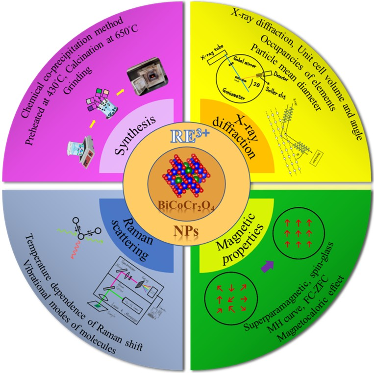
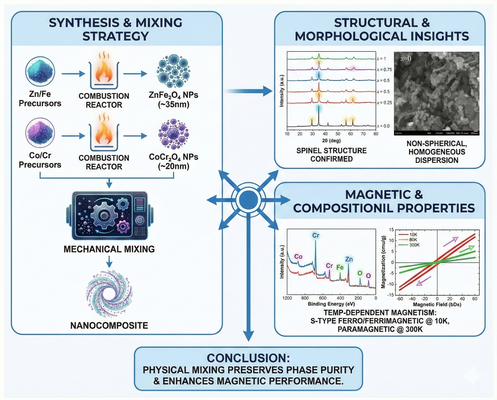
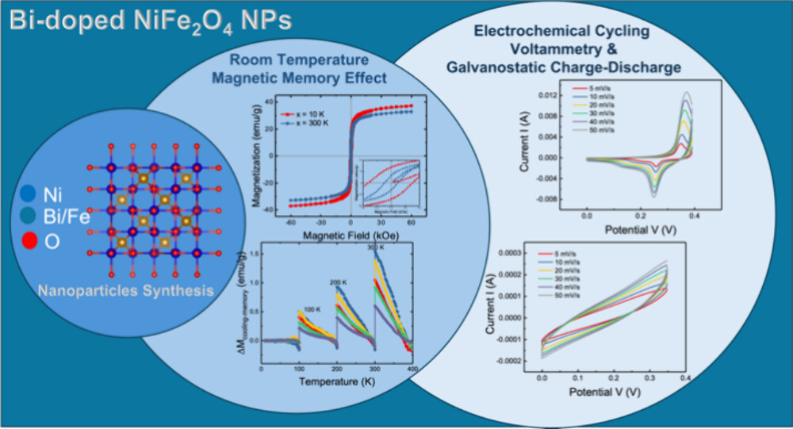
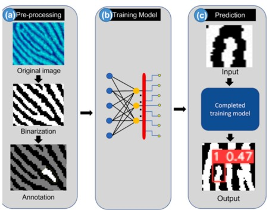
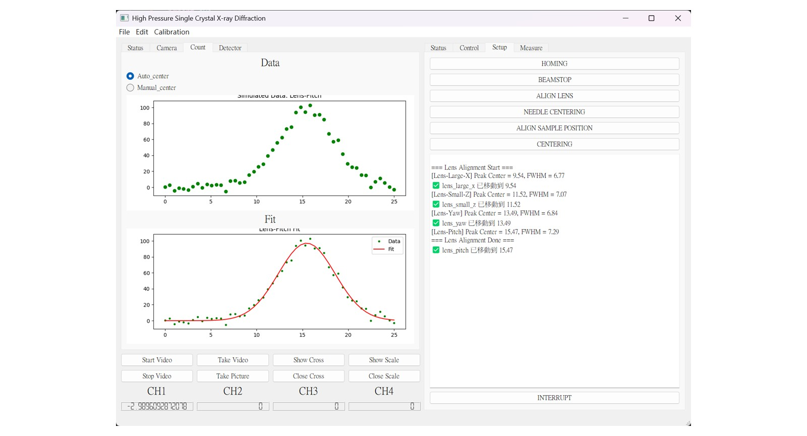
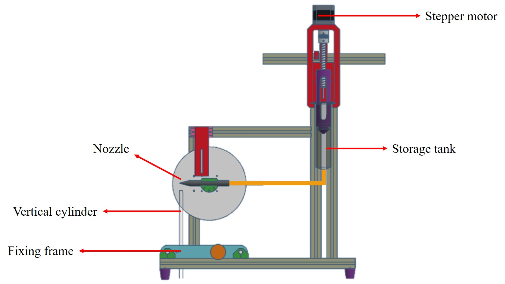
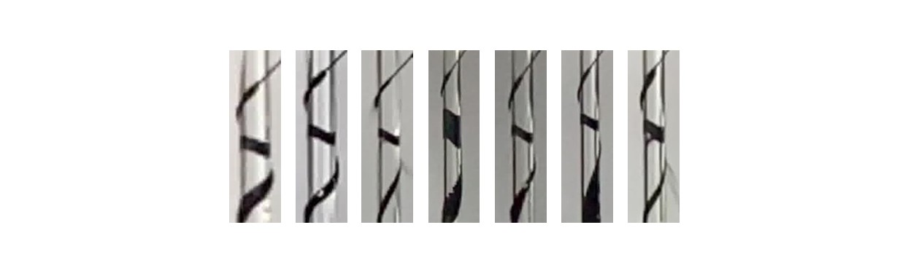
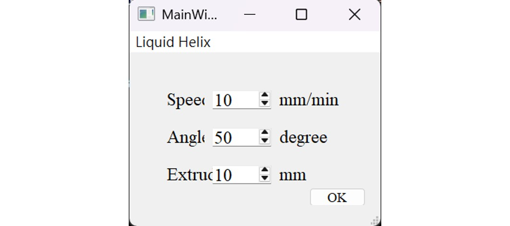

跨越理論物理與工程實作的界線。
專精於同步輻射實驗、自動化設備開發與 AI 數據分析。
結合 AI 與材料科學的研究成果 (共 22 篇)
Ming-Kang Ho (First Author), et al.
Highlight: 開發新型鉍摻雜燃燒合成法，顯著提升濕度感測靈敏度與磁熱效應。

K. Manjunatha, ..., Ming-Kang Ho, et al.
Highlight: 深入探討 ZnFe₂O₄/CoCr₂O₄ 奈米複合材料的晶體結構、形貌、磁性與電子結構特性。

Tsu-En Hsu, ..., Ming-Kang Ho, et al.
Highlight: 研究高效能 Bi 摻雜 NiFe₂O₄ 奈米粒子，應用於先進超級電容器及室溫磁記憶體。

D. R. Lavanya, ..., Ming-Kang Ho, et al.
Highlight: 結合 YOLOv8 深度學習模型，自動識別並標註指紋特徵點，提升鑑識科學自動化程度。

Sensors and Actuators B: Chemical (2025)
Journal of Energy Storage (2024)
Materials Today Chemistry (2024)
ACS Applied Optical Materials (2024)
Sustainable Materials and Technologies (2024)
Journal of Solid State Chemistry (2024)
Journal of Materials Science: Materials in Electronics (2024)
Journal of Inorganic and Organometallic Polymers and Materials (2024)
ACS Applied Nano Materials (2023)
Materials Today Sustainability (2023)
Biomaterials Advances (2023)
The Journal of Physics Chemistry C (2023)
ACS Applied Nano Materials (2023)
Colloids and Surfaces A (2023)
International Journal of Molecular Science (2022)
ACS Applied Nano Materials (2022)
Applied Surface Science (2022)
ACS Applied Nano Materials (2021)
財團法人國家同步輻射研究中心 (NSRRC) - TPS 15A
負責 TPS 15A1 光束線（微米單晶 X 光繞射）的建置、維運及用戶服務。並且有 TLS 03A1, 20A1, 17C1 及 TPS 23A1 光束線使用的用戶經驗。
國立東華大學 (畢業於 2024/07)
專攻磁性材料、奈米科技與 X 光頻譜分析。指導教授：吳勝允教授 (Modern NanoMag Lab)。
從物理原理到軟硬體整合的全端工程展示
為了應對高壓結晶學對精確對光與快速數據收集的需求，開發了整合馬達控制與偵測器讀取的 Master GUI。此系統大幅減少了人工操作的時間與誤差。
Real-time Fitting (Gaussian/Lorentzian)，自動計算 Peak Center 並驅動馬達校正晶體位置。




針對流體力學中的 "Teapot Effect" 與 3D 列印噴頭阻塞問題，開發了一套自動化觀測系統。解決了傳統手動實驗無法精確控制流速與角度的痛點。
Python PyQt5 GUI，即時調整參數 (Speed, Angle, Extrusion) 並生成 G-code 控制機器。
網站背景影片展示了我在 TPS 15A1 線站進行的實驗儀器架設、調校與實際運作過程。
這不僅是技術的展現，更是面對複雜實驗環境時，解決現場問題與精準操作的實力證明。
Fundamentals of Accelerated Data Science
點擊查看證書
ActInSpace 2018
Taiwan-France Space Innovation Hackathon
(Team: Have Fun)
點擊查看證書
經濟部產業人才能力鑑定
3D列印積層製造工程師 - 初級
點擊查看證書